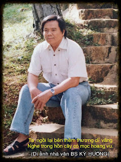

B.s. Kỳ Hương tên thật là Nguyễn Bửu Sơn, quê ở làng Hưng Nhượng, tổng Bảo Phước, tỉnh Bến Tre. Trong khai sanh ghi sanh năm 1951 tại làng An Hội, tổng Bảo Hựu, tỉnh Bến Tre.
Kiếm cơm bằng nghề gõ đầu trẻ từ năm 1972 cho tới ngày hưu trí.
Kỳ ảo đất phương Nam (Nam bộ Kỳ ảo chí) là tác phẩm đầu tay của ông.
Kính dâng lên hương hồn thầy Phan Nghi Linh, Giáo sư Đại học Văn khoa Sài Gòn cũ, người đã giúp đỡ tôi rất nhiều trong việc sưu tầm tư liệu để viết nên quyển sách này.
Địa danh có thật, nhân vật là hư cấu. Nếu có sự trùng hợp, thì đó là ngoài ý muốn của tác giả, xin quý độc giả niệm tình tha thứ. Cũng không thể đòi hỏi những chi tiết, sự kiện trong tác phẩm kỳ ảo phải thật chính xác. Xin quý độc giả vui lòng góp ý, tác giả rất cám ơn.

Nhà văn B.S. Kỳ Hương mất ngày 11/06/2020 (nhằm ngày 20/04 nhuận/CanhTý)
Chuyện xưa tích cũ đất Bến Tre, ông già bà cả vẫn còn kể lại cho con cháu nghe:
— Đâu đó ở miệt rừng Tân Hưng, huyện Ba Tri, hơn trăm năm trước, có một người đờn ông tên Yến, ngồi nhậu với bạn bè, đêm hôm khuya khoắt, thiếu rượu mới sai con gái đi mua. Đứa con gái nhỏ của va - mới mười hai tuổi - cỡi trên lưng một con cọp mun, băng băng xẻ rừng xuống tận quán Sơn Đốc mua rượu về cho mấy bợm.
— Ít ai biết thành Gia Định xưa cũng có một cái Hổ quyền do Đức Tả Quân Lê Văn Duyệt cho xây, cạnh tranh gay gắt với cái Hổ quyền chính thức của triều đình Huế.
— Lê Văn Khôi tay không giết cọp để dằn mặt sứ thần Xiêm quốc.
— Một nghi án kéo dài cả trăm năm. Loài hổ dữ thành tinh, muôn dặm tầm thù, cố tìm cho ra hậu duệ của kẻ thù để mà báo oán.
— Một đứa con gái bảy tuổi và đứa em mới sáu tuổi đầu đã giết chết tươi con hùm tinh mà tất cả các tay thợ săn lão làng thảy đều bó tay, chạy mặt.
— Huyền thoại về người hóa hổ.
— Sự thật về tai nạn chìm tàu thảm khốc đêm ba mươi Tết của tàu chệc Đồng Sanh. Cả trăm hành khách chết chìm hết ráo, chỉ còn sót lại một người đờn bà, còn sống nhờ... không biết lội!
— Cuộc đất Thủy Bái, một lối phong thủy đặc trưng của vùng sông nước Nam Bộ.
— Trận đấu võ đài không tiền khoáng hậu giữa võ sĩ Sáu Cường với vô địch “bốc xiêm” đến từ vịnh Xiêm La. Nhưng vui nhứt vẫn là trận đấu giữa chú Sáu với đại lực sĩ lưỡng quốc Miên - Lèo.
— Cú đá song phi “ngàn cân điển xẹt” của vô địch Sáu Cường, đụng độ nháng lửa với “Bình tích vi bộ” của một chàng trai Bến Tre vô danh tiểu tốt.
— Các tay đại điển chủ Nam Kỳ mỗi khi nghe nhắc đến tên anh em thằng Mây thằng Mưa thì thảy đều xanh máu mặt. Nhưng đảng cướp khét tiếng nầy lại sợ mất mật trước một chàng trai ở đợ bình thường.
— Hậu quả thảm khốc của một lời thề trước mặt cọp.
Tuy nhiên, đó chỉ mới là các món ăn chơi khai vị mà thôi, chưa phải là cái mà tác giả muốn khoe ra ở đây. Vì ngoài các chương kỳ ảo ra, lại còn có các hồi “chí dị” nữa. Các hồi chí dị nầy được dụng công làm khéo theo kiểu Hồ-ly-vuốt, vẫn còn nằm, ngồi lềnh khênh ở đâu đó trong cuốn sách.
Muốn biết “chí dị” tới bực nào, xin mời mở sách ra coi. Không cầm thì thôi, lỡ cầm lên rồi, nó bắt mình phải đọc cho hết cuốn, không dễ gì mà bỏ xuống được đâu, bảo đảm không ngáp cái nào.
Mạnh Đông, năm Canh Dần - 2010
B.s. Kỳ Hương cẩn ký